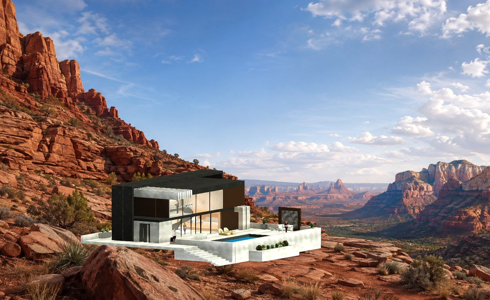
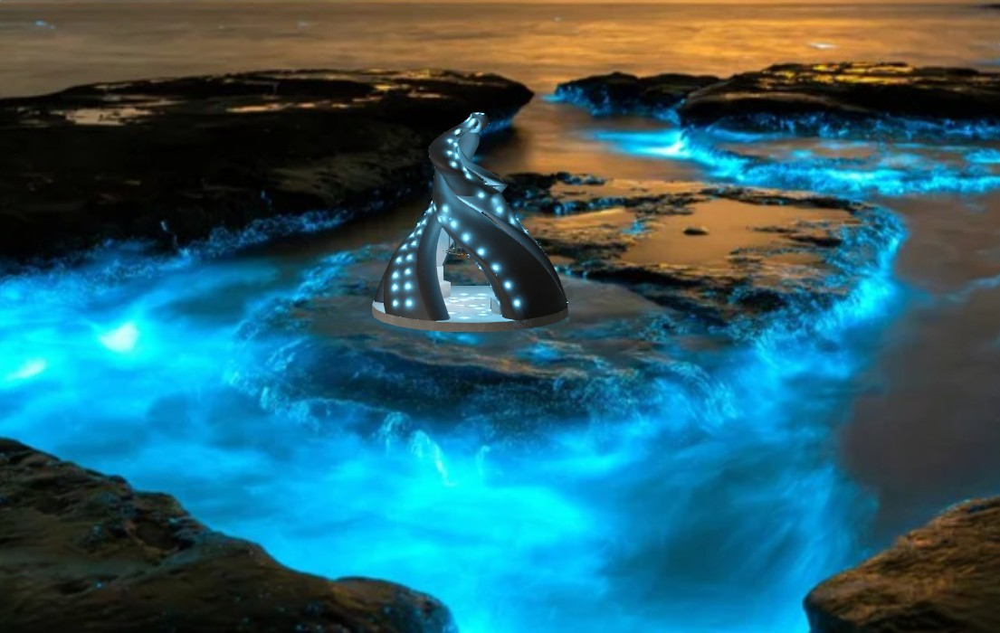
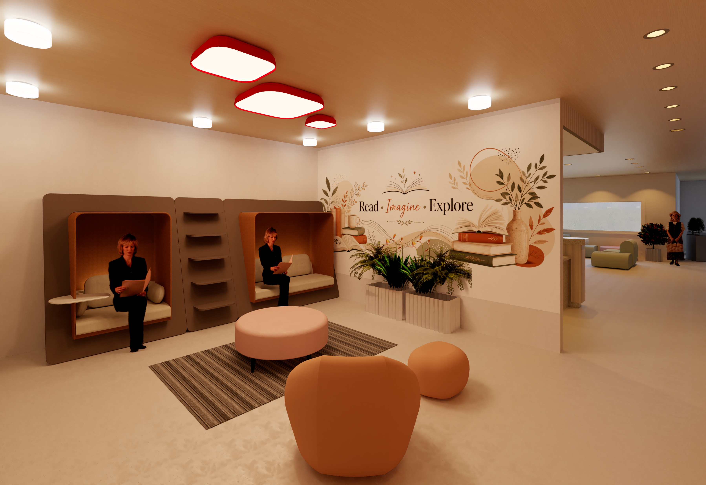

Concept ✦ Design ✦ Implement
You don't just enjoy the space — you live in it.
Welcome
A concept-driven interior design studio in Frisco, Texas, creating residential and commercial spaces from concept to reality.
Meet the Founder

Founder & Principal Designer
I design spaces that begin with your story. With a background in engineering and software and interior design training at UC Berkeley, I bring creative concepts and technical precision together — from the first sketch to the final detail. My work received the 2026 IIDA Texas/Oklahoma Chapter Design Excellence Award.
More about Srilakshmi →From Concept to Reality
We listen to your story, goals, and site, and translate them into a clear design concept.
The concept is refined through space plans, materials, lighting, and 3D visualization.
Coordinated drawings and specifications make the concept buildable.
Procurement, site coordination, and installation bring the concept to life.
From the Journal

Cameron’s Canyon Studio was designed for a filmmaker who creates new worlds. Instead of creating a world, here he is given a world to explore…
Read more →@arxrenouer on Instagram




Recognition
Student Commercial category — Tentacle Folly
Concept · Design · Implement
You don't just enjoy the space — you live in it.
 Serenity Senior Living
Serenity Senior Living Tentacle Folly
Tentacle Folly